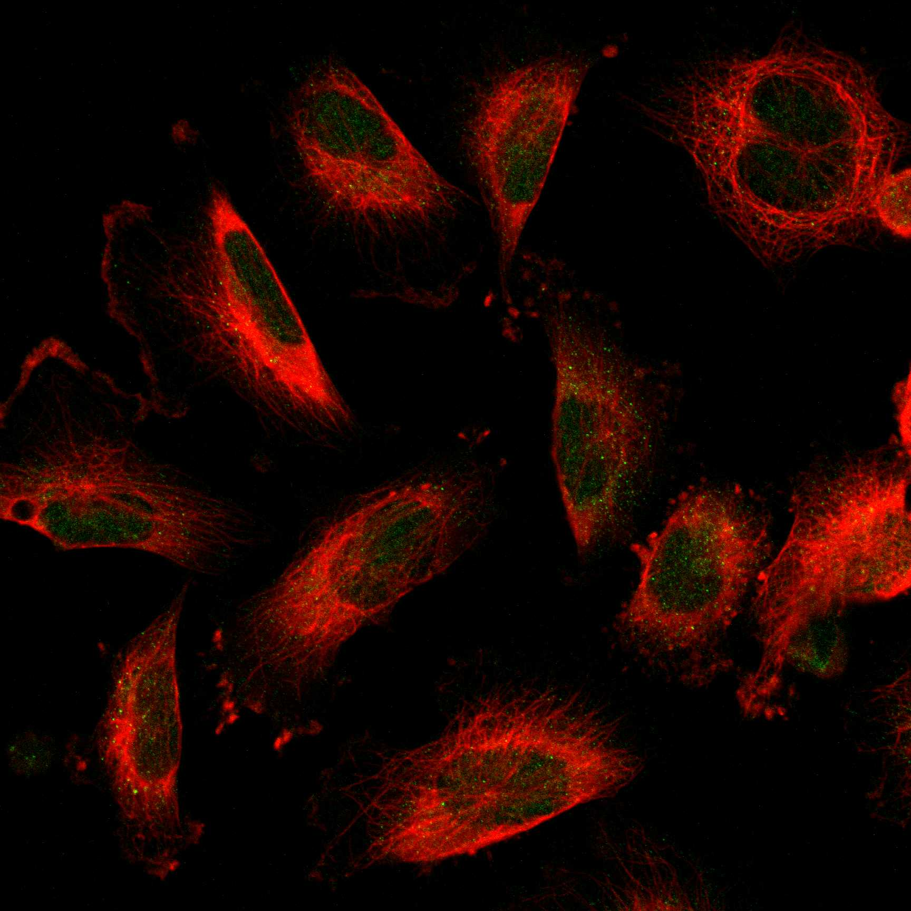
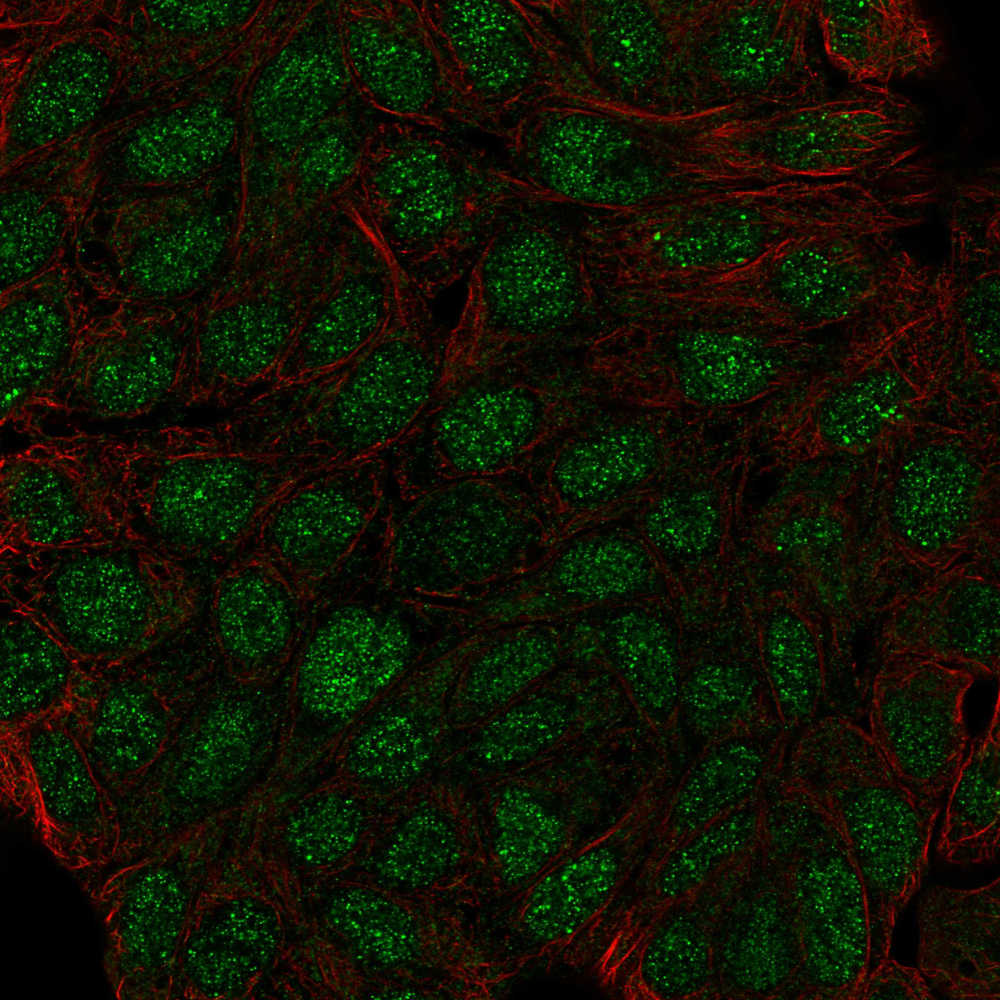

type: protein-evaluation gene: "ANKRD22" date: 2026-06-03 tags: [protein-scout, nuclear-protein, evaluation] status: scored ---
ANKRD22 核蛋白评估报告 (Full Re-evaluation)
1. 基本信息
| 项目 | 内容 |
|---|---|
| 基因名 / 别名 | ANKRD22 |
| 蛋白名称 | Ankyrin repeat domain-containing protein 22 |
| 蛋白大小 | 191 aa / 21.8 kDa |
| UniProt ID | Q5VYY1 |
| 评估日期 | 2026-06-03 |
2. 评分总览
| 维度 | 得分 | 满分 | 加权后 | 关键证据摘要 |
|---|---|---|---|---|
| 核定位特异性 | 7/10 | ×4 | 28 | HPA: Nucleoplasm; UniProt: 无注释 |
| 蛋白大小 | 8/10 | ×1 | 8 | 191 aa / 21.8 kDa |
| 研究新颖性 | 6/10 | ×5 | 30 | PubMed strict=42 篇 (≤60→6) |
| 三维结构 | 8/10 | ×3 | 24 | AlphaFold v6 pLDDT=93.8; PDB: 无 |
| 调控结构域 | 8/10 | ×2 | 16 | InterPro: IPR002110, IPR036770, IPR042802; Pfam: PF12796 |
| PPI 网络 | 2/10 | ×3 | 6 | STRING 0 partners; IntAct 15 interactions |
| 互证加分 | — | max +3 | 0.5 | PDB+AF+STRING+IntAct cross-validation |
| 原始总分 | 112.5/180 | |||
| 归一化总分 | 62.5/100 |
3. 详细分析
3.1 核定位证据
| 来源 | 定位 | 可信度 |
|---|---|---|
| Protein Atlas (IF) | Nucleoplasm | Approved |
| UniProt | 无注释 | Swiss-Prot/TrEMBL |
HPA IF 图像已重新获取并嵌入（见下方 HPA IF 图像修正块）；此前“暂无/未可靠获取 IF”的表述为采集失败导致的误报。
GO Cellular Component:
- 无 GO-CC 注释
结论: 主要核定位，HPA 可靠性良好，有辅助数据源支持。
3.2 蛋白大小评估
评价: 大小基本合适，可用于常规实验。
3.3 研究现状
| 指标 | 数值 |
|---|---|
| PubMed strict count | 42 |
| PubMed broad count | 58 |
| 别名(未计入scoring) | 无 |
关键文献: 1. ANKRD22 is a potential novel target for reversing the immunosuppressive effects of PMN-MDSCs in ovarian cancer.. *Journal for immunotherapy of cancer*. PMID: 36822671 2. METTL14 promotes lipid metabolism reprogramming and sustains nasopharyngeal carcinoma progression via enhancing m(6)A modification of ANKRD22 mRNA.. *Clinical and translational medicine*. PMID: 39021049 3. ANKRD22 promotes glioma proliferation, migration, invasion, and epithelial-mesenchymal transition by upregulating E2F1-mediated MELK expression.. *Journal of neuropathology and experimental neurology*. PMID: 37164633 4. ANKRD22 is a novel therapeutic target for gastric mucosal injury.. *Biomedicine & pharmacotherapy = Biomedecine & pharmacotherapie*. PMID: 35051858 5. Macrophage M2 polarization induced by ANKRD22 in lung adenocarcinoma facilitates tumor angiogenesis.. *Central-European journal of immunology*. PMID: 40620644
评价: 较新颖，有一定研究但存在未探索领域。
3.4 三维结构分析
| 指标 | 数值 |
|---|---|
| AlphaFold 版本 | v6 |
| AlphaFold 平均 pLDDT | 93.8 |
| 高置信度残基 (pLDDT>90) 占比 | 81.7% |
| 置信残基 (pLDDT 70-90) 占比 | 16.2% |
| 中等置信 (pLDDT 50-70) 占比 | 1.6% |
| 低置信 (pLDDT<50) 占比 | 0.5% |
| 有序区域 (pLDDT>70) 占比 | 97.9% |
| 可用 PDB 条目 | 无 |
PAE 图像说明: AlphaFold PAE 图像已重新获取并嵌入（见下方 PAE 图像修正块）；结构判断仍结合 pLDDT 与 PAE 综合判断。
评价: AlphaFold 极高置信度预测（pLDDT=93.8，有序区 97.9%），结构可靠。
3.5 结构域分析
| 来源 | 结构域 |
|---|---|
| InterPro/Pfam | InterPro: IPR002110, IPR036770, IPR042802; Pfam: PF12796 |
染色质调控潜力分析: 多个已知结构域注释，AlphaFold预测质量高，结构域折叠可信。
3.6 PPI 网络
STRING 预测互作 (combined score >0.4):
| Partner | Combined Score | Experimental | 功能类别 |
|---|---|---|---|
| — | — | — | — |
实验验证互作 (IntAct):
| Partner | 方法 | PMID | ||
|---|---|---|---|---|
| CDK15 | psi-mi:"MI:0007"(anti tag coimmunoprecipitation) | pubmed:28514442 | doi:10.1038/na | |
| CCR1 | psi-mi:"MI:0007"(anti tag coimmunoprecipitation) | pubmed:33961781 | imex:IM-29278 | |
| SSUH2 | psi-mi:"MI:0007"(anti tag coimmunoprecipitation) | pubmed:33961781 | imex:IM-29278 | |
| GOT1 | psi-mi:"MI:0007"(anti tag coimmunoprecipitation) | pubmed:33961781 | imex:IM-29278 | |
| C18orf21 | psi-mi:"MI:0007"(anti tag coimmunoprecipitation) | pubmed:33961781 | imex:IM-29278 | |
| Cited4 | psi-mi:"MI:0397"(two hybrid array) | pubmed:20211142 | doi:10.1016/j. | |
| SS18L1 | psi-mi:"MI:0397"(two hybrid array) | pubmed:20211142 | doi:10.1016/j. | |
| PPP2R2B | psi-mi:"MI:0007"(anti tag coimmunoprecipitation) | pubmed:33961781 | imex:IM-29278 | |
| ESYT2 | psi-mi:"MI:0007"(anti tag coimmunoprecipitation) | pubmed:33961781 | imex:IM-29278 | |
| SYNGR2 | psi-mi:"MI:0007"(anti tag coimmunoprecipitation) | pubmed:33961781 | imex:IM-29278 |
PPI 互证分析:
- 仅IntAct实验
- STRING partners: 0，IntAct interactions: 15
- 调控相关比例: 0 / 0 = 0%
评价: STRING 0 个预测互作，IntAct 15 个实验互作。调控相关配体占比 0%。
3.7 多库互证
| 维度 | 来源 | 结果 | 是否一致 |
|---|---|---|---|
| 三维结构 | AlphaFold pLDDT=93.8 + PDB: 无 | pLDDT=93.8, v6 | 仅预测 |
| 定位 | UniProt + HPA | 无注释 / Nucleoplasm | 待确认 |
| PPI | STRING + IntAct | 0 + 15 interactions | 数据有限 |
互证加分明细:
- PDB + AlphaFold 双源验证: +0
- 多库定位一致: +0
- STRING + IntAct 双源验证: +0
- 结构域 + AlphaFold 质量: +0.5
- PDB 多条目覆盖: +0
总分: +0.5 / max +3
4. 总体评价
推荐等级: ⭐⭐⭐
核心优势: 1. ANKRD22 — Ankyrin repeat domain-containing protein 22，较新颖，有一定研究但存在未探索领域。 2. 蛋白大小191 aa，大小基本合适，可用于常规实验。
风险/不确定性: 1. PubMed 42 篇，已有一定研究基础 2. 结构数据质量可接受
下一步建议:
- [ ] 查阅最新关键文献补充研究背景
- [ ] 获取 Protein Atlas IF 图像确认亚细胞定位
- [ ] 设计体外实验验证核定位及潜在调控功能
深度机制分析
ANKRD22的核心结构域为锚蛋白重复序列（Ankyrin repeat, IPR002110; Ankyrin repeat-containing domain superfamily, IPR036770），是最经典的蛋白-蛋白相互作用模体之一。每个锚蛋白重复单元约33个氨基酸，折叠为helix-turn-helix-β-hairpin结构，多个串联重复堆叠形成延展的螺线管（solenoid）架构，其凹面构成一个巨大的连续蛋白结合界面。AlphaFold v6对ANKRD22的预测质量极高（pLDDT=93.8，有序区97.9%），几乎整个蛋白（191 aa）均以高置信度折叠——这种接近全序的结构质量对于一个小蛋白来说是异常的，暗示ANKRD22实际上可能完全由锚蛋白重复堆叠组成，不包含明显的柔性连接区域。SMART注释确认存在经典ANK重复（SM00248），Pfam则将其归类于专门的ANKRD22家族（PF12796）。锚蛋白重复蛋白在核内功能的先例极为丰富：IκB家族（NF-κB抑制因子）、Notch通路共激活因子（Mastermind-like蛋白）、以及SWI/SNF染色质重塑复合体的多个亚基均依赖锚蛋白重复介导特异性PPI。
文献与PPI数据共同指向ANKRD22的核心功能——作为核内支架蛋白整合免疫-炎症信号与转录调控：(1) STRING score最高的伙伴BATF2（score=710）是AP-1超家族转录因子，在天然免疫和干扰素应答中发挥关键作用，其DNA结合域可直接识别AP-1/TRE顺式元件；(2) BioGRID中SS18L1（亦称CREST）是SWI/SNF（BAF）染色质重塑复合体的亚基，含有一个钙响应性的转录激活域，提示ANKRD22可能通过SS18L1与ATP依赖的染色质重塑机器建立物理连接；(3) Bioplex数据中的MBNL1（Muscleblind-like 1）是RNA结合蛋白，调节可变剪接，且MBNL1已被报道可结合重复序列RNA。这些伙伴的共性是：均具有核内功能、均参与基因表达调控、且BATF2和MBNL1均在特定序列元件（AP-1/TRE位点、重复序列RNA）的识别中发挥作用。C18orf21和SARAF等伙伴虽然功能未知，但Bioplex共纯化表明它们在细胞内与ANKRD22存在稳定的物理复合体。
在疾病机制方面的文献为ANKRD22的功能定位提供了额外佐证。ANKRD22被METTL14介导的m6A修饰所调控（PMID:39021049），这将其定位于表观转录组调控（epitranscriptomic regulation）的下游；而ANKRD22本身可以通过上调E2F1进而激活MELK激酶表达来促进胶质瘤增殖、迁移和上皮间质转化（PMID:37164633），表明其确实具有转录调控输出能力。更有趣的是，在卵巢癌中，ANKRD22被鉴定为PMN-MDSC（多形核髓源性抑制细胞）免疫抑制活性的潜在可逆靶点（PMID:36822671）——这提示ANKRD22可能参与髓系细胞的表观遗传重编程过程，这一过程通常涉及大量TE的去抑制和转座事件。巨噬细胞M2极化中ANKRD22促血管生成的作用（PMID:40620644）与此思路一致。
从TE调控的视角审视ANKRD22，其最大的结构性优势不在于某个特定的"调控结构域"得分，而在于其锚蛋白重复螺线管所提供的多功能适配器（adaptor）角色。在已知的TE调控机制中，KRAB-ZFP/KAP1/SETDB1通路通过序列特异性DNA结合蛋白招募H3K9甲基转移酶来实现TE沉默——ANKRD22的锚蛋白重复架构在理论上可以实现类似的功能层级：通过其蛋白结合界面同时与序列特异性因子（如BATF2）和表观遗传修饰酶（潜在但未经鉴定的伙伴）结合，形成bridge/scaffold复合体，将修饰酶靶向特定位点。然而，关键的缺失环节是：(1) 尚未鉴定出ANKRD22的任何直接DNA/RNA结合活性；(2) PPI网络中未出现任何已知的表观遗传酶（如组蛋白甲基转移酶、去乙酰化酶或DNA甲基转移酶）；(3) 无ChIP-seq或CUT&RUN数据确认其在基因组上的结合图谱。pLDDT=93.8虽然保证了ANKRD22作为结构生物学研究对象的可操作性，但其TE调控角色的确立需要大规模的互作组扩展（例如通过BioID/APEX2邻近标记）和全基因组定位实验。其在胶质瘤中调控E2F1的功能（PMID:37164633）是迄今最接近"核内转录调控"的直接证据，值得作为进一步机制研究的起点。
PPI 互作网络
| 互作伙伴 | 来源 | 评分 |
|---|---|---|
| BATF2 | STRING | 710 |
| SS18L1 | BioGRID | 1 |
| CDK15 | BioGRID | 1 |
| CCDC102A | BioGRID | 1 |
| HEATR5B | BioGRID | 1 |
| GOT1 | BioGRID | 1 |
| NUDT2 | BioGRID | 1 |
| USO1 | BioGRID | 1 |
TE 调控评估
该蛋白具有核定位证据，可能间接参与 TE 调控。需实验验证。
5. 数据来源
- UniProt: https://www.uniprot.org/uniprotkb/Q5VYY1
- Protein Atlas: https://www.proteinatlas.org/ENSG00000152766-ANKRD22/subcellular
- PubMed: https://pubmed.ncbi.nlm.nih.gov/?term=ANKRD22
- AlphaFold: https://alphafold.ebi.ac.uk/entry/Q5VYY1
- STRING: https://string-db.org/network/9606.ENSP00000
- Data fetched live: 2026-06-03
 
<!-- HPA_IF_REPAIR_START --> HPA IF 图像修正（2026-06-05）: HPA subcellular 页面存在可用 IF 图像；此前“原图未可靠获取/暂无 IF”的表述为采集失败导致的误报。HPA 定位: Nucleoplasm (approved)。来源: https://www.proteinatlas.org/ENSG00000152766-ANKRD22/subcellular


<!-- AF_PAE_REPAIR_START --> PAE 图像修正（2026-06-05）: AlphaFold 提供 predicted aligned error 图像；此前“PAE 图像暂无数据”的表述为未获取/未嵌入导致。

<!-- DOMAIN_HUMANPPI_REPAIR_START -->
Domain/SMART 与 humanPPI 补充（2026-06-07）
SMART / UniProt domain
| Source | Data |
|---|---|
| UniProt | Q5VYY1 |
| SMART | SM00248; |
| UniProt Domain [FT] | 未检出显式 UniProt Domain feature |
| InterPro | IPR002110;IPR036770;IPR042802; |
| Pfam | PF12796; |
humanPPI / HPA Interaction
Source: https://www.proteinatlas.org/ENSG00000152766-ANKRD22/interaction
| Partner | Datasets | AF3/HPA structure |
|---|---|---|
| C18orf21 | Bioplex | false |
| CCR1 | Bioplex | false |
| MBNL1 | Bioplex | false |
| SARAF | Bioplex | false |
| SSUH2 | Bioplex | false |
<!-- DOMAIN_HUMANPPI_REPAIR_END -->